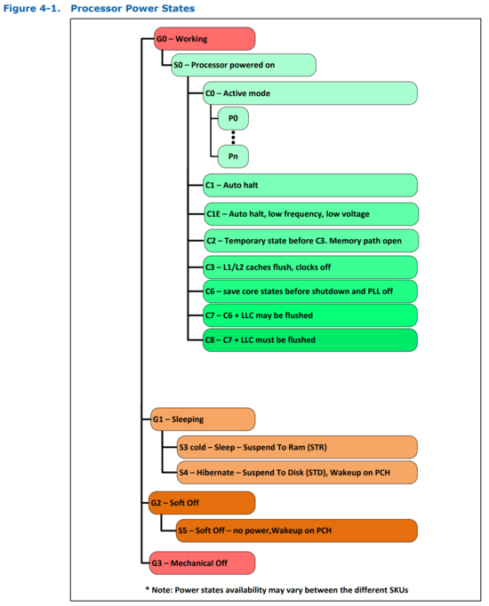

Advanced Configuration and Power Interface (ACPI)
Table of Contents
Overview
- Developed by Intel, Microsoft, Toshiba to save power on laptops
- Power management configuration standard for the PC
- Allows the OS to control the power given to each device (like powering off certain devices not in use)
- Used to control and check thermal zones (temperature sensors or fans), battery levels, PCI IRQ routing, CPUs, NUMA domains, etc.
- Info about ACPI is stored in the BIOS's memory
- There are two parts: tables and runtime environment
RSDP
- Root system description pointer: data structure used by ACPI
- To begin using ACPI, the OS looks for the RSDP
- The RSDP contains a pointer to the RSDT (table)
Structure
// ACPI Version 1.0
struct RSDP_t {
char Signature[8]; // "RSD PTR "
uint8_t Checksum; // 0 when added to all other bytes
char OEMID[6]; // OEM supplied, IDs the OEM
uint8_t Revision; // Version
uint32_t RsdtAddress; // 32-bit physical address of RSDT
} __attribute__ ((packed));
// ACPI Version 2.0
struct XSDP_t {
char Signature[8];
uint8_t Checksum;
char OEMID[6];
uint8_t Revision;
uint32_t RsdtAddress; // deprecated since version 2.0
uint32_t Length; // size of entire table
uint64_t XsdtAddress; // 64-bit physical address of the XSDT
uint8_t ExtendedChecksum; // calculates checksum of entire table
uint8_t reserved[3];
} __attribute__ ((packed));
Detecting the RSDP
- Either located within the first 1KB of the EBDA (Extended BIOS Data Area) or the memory region from 0x000E0000 to 0x000FFFFF (main BIOS area below 1 MB)
- The OS finds the pointer using the "RSD PTR " signature (the signature in always on a 16 byte boundary)
- For UEFI systems, the RSDP is somewhere in the EFI_SYSTEM_TABLE
Validating the RSDP
- After the RSDP is found its checksum must be validated
- ACPI version: the Revision field in the RSDP; 0 = ver1.0, 2 = ver2.0-6.1
- Validating checksum:
- ACPI 1.0: add up all bytes in structure and make sure lowest byte of the result is 0
- ACPI 2.0: same as 1.0 but with all the new fields too
Tables
- Tables are used by the OS for configuration during boot
- Include things like how many CPUs, APIC details, NUMA memory ranges
- Fixed tables: RSDT/XSDT, FADT, MADT, BGRT, SRAT
- Differentiated tables: DSDT, SSDT
RSDT
XSDT
FADT
MADT
BGRT
SRAT
DSDT
SSDT
Runtime Environment
- Consists of AML code and the ACPI SMM code
- AML code: platform independent OOP language that comes from the BIOS and devices
- ACPI SMM code: ACPI code run in system management mode
AML
ACPI States
- G states: global
- S states: system
- C states: processor power
- Can either be package C-states or core C-states
- P states: performance
- 0 is more on, larger numbers are more off
| Global (G) State |
Sleep (S) State |
Processor Package (C) State |
Processor State |
System Clocks |
Description |
| G0 |
S0 |
C0 |
Full on |
On |
Full on |
| G0 |
S0 |
C1/C1E |
Auto-Halt |
On |
Auto-Halt |
| G0 |
S0 |
C3 |
Deep Sleep |
On |
Deep Sleep |
| G0 |
S0 |
C6/C7 |
Deep Power Down |
On |
Deep Power Down |
| G0 |
S0 |
C8 |
Off |
On |
Deeper Power Down |
| G1 |
S3 |
Power Off |
Off |
Off, except RTC |
Suspend to RAM (STR - Sleep). Context saved to memory (S3-Hot is not supported by the processor) |
| G1 |
S4 |
Power Off |
Off |
Off, except RTC |
Suspend to Disk (STD - Hibernate). All power lost (except wake-up on PCH) |
| G2 |
S5 |
Power Off |
Off |
Off, except RTC |
Soft Off. All power lost (except wake-up on PCH). Total reboot. |
| G3 |
N/A |
Power Off |
Off |
Power Off |
Hard Off. All power removed from system. |

Switching to ACPI Mode
Checking if in ACPI Mode
- ACPI is already enabled if:
- the SMI command field in the FADT is 0
- the ACPI enable and ACPI disable fields in the FADT are both 0
- bit 0 (value 1) of the PM1a control block I/O port is set
Enabling ACPI Manually
// write the value of the ACPI enable field
outb(fadt->smi_command,fadt->acpi_enable);
// poll until PM1a control block bit 0 (value 1) is set
while (inw(fadt->pm1a_control_block) & 1 == 0);
// Note: when this bit is set, power management events will generate SCIs and not SMIs
// this means the OS had to handle the event instead of SMBIOS
// the SCI is an IRQ in the FADT